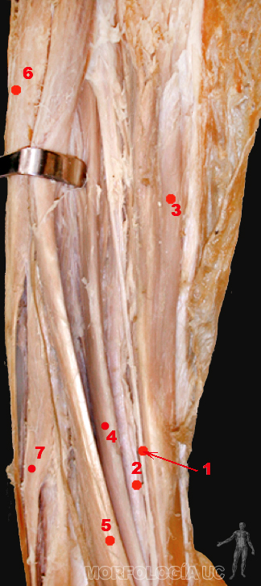
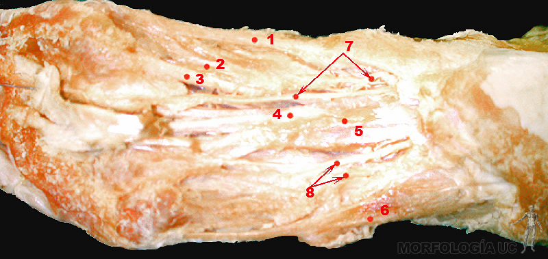
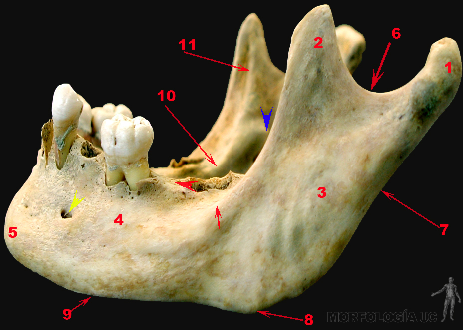

Aparato Locomotor
-
Fig. 4-1: Diagrama que muestra los distintos tipos de hueso.
- 1= diáfisis y 1*= epífisis proximal y distal de un hueso largo (fémur);
- 2= hueso plano (hueso parietal);
- 3= hueso irregular (vértebra lumbar);
- 4= hueso corto (calcáneo);
- 5= hueso esponjoso de la epífisis;
- 6= tabla externa y 6*= tabla interna de un hueso plano del neurocráneo;
- 7= diploe (tejido óseo esponjoso de un hueso plano del neurocráneo);
- 8= hueso esponjoso;
- 9= hueso compacto;
- 10= canal medular (hueso largo).
-
Fig. 4-2: Esquema que muestra los distintos tipos articulares, de izquierda a derecha: inmóvil, semimóvil y móvil o sinovial.
- 1= sutura interparietal;
- 2= sutura parietooccipital;
- 3= disco intervertebral de la sínfisis intervertebral;
- 4= hueso largo;
- 5= cavidad articular;
- 6= cápsula articular;
- 7= cartílago articular;
- 8= membrana sinovial.
-

Fig. 4-3A: Disección de la región pectoral y deltoídea, vista anterior, lado derecho; nótese el surco deltopectoral (puntos rojos) ocupado por la vena cefálica (punto azul).
La foto muestra las dimensiones de un músculo plano como el pectoral mayor.
- 1= porción abdominal, 1*= esternocostal, y 1**= clavicular del músculo pectoral mayor, recubierto por su fascia;
- 2= músculo deltoides;
- 3= músculo esternocleidomastoideo.
-
Fig. 4-3B: Disección de cuello en plano intermedio, vista lateral, lado izquierdo; nótese el asa cervical, de concavidad superior, dispuesta sobre el paquete neurovascular del cuello.
La foto muestra un músculo digástrico, como las porciones marcadas 1 y 2.
Cabeza de flecha= nervio vago.- 1= vientre superior del músculo omohioideo;
- 2= vientre inferior del músculo omohioideo;
- 3= músculo esternohioideo;
- 4= músculo esternocleidomastoideo rechazado;
- 5= vena yugular interna;
- 6= arteria carótida común;
- 7= glándula submandibular;
- 8= prominencia laríngea.
-
Fig. 4-3C: Disección de la región anterior del brazo, vista anterior, lado derecho.
La foto muestra un músculo con dos orígenes, como el bíceps braquial.
- 1= músculo bíceps braquial;
- 2= tendón de la cabeza larga del músculo bíceps braquial;
- 3= tendón de la cabeza corta del músculo bíceps braquial;
- 4= músculo braquial.
-
Fig. 4-3D: Disección de la pared anterolateral del abdomen, vista anterior.
La foto muestra un músculo poligástrico como el recto del abdomen.
- 1= vientres del músculo recto del abdomen y sus intersecciones tendinosas (1*);
- 2= lámina anterior de la vaina del músculo recto del abdomen;
- 3= músculo oblicuo externo del abdomen;
- 4= tela subcutánea del abdomen sobre la fascia del músculo oblicuo externo del abdomen.
-
Fig. 4-4: Esquema que muestra las porciones y curvaturas de la columna vertebral.
- 1= porción cervical de la columna vertebral y lordosis cervical;
- 2= porción torácica y cifosis torácica;
- 3= porción lumbar y lordosis lumbar;
- 4= cóccix;
- 5= hueso sacro;
- 6= disco intervertebral.
-
Fig. 4-5: Vértebra cervical, torácica y lumbar (de izquierda a derecha).
- 1= proceso transverso;
- 2= cuerpo vertebral;
- 3= foramen vertebral;
- 4= proceso espinoso;
- 5= lámina del arco vertebral;
- 6= proceso articular superior;
- 7= fosita costal superior y fosita costal del proceso transverso;
- 8= pedículo del arco vertebral;
- 9= proceso articular inferior.
-
Fig. 4-6: Esquema del esqueleto del tórax.
- 1= primera vértebra torácica (T1) y duodécima vértebra torácica (T12);
- 2= primera costilla (costilla verdadera);
- 3= articulación esternoclavicular;
- 4= manubrio esternal;
- 5= cuerpo esternal;
- 6= proceso xifoides;
- 7= cartílagos costales de la séptima a décima costillas;
- 8= undécima y duodécima costillas (costillas flotantes);
- 9= articulación costotransversa;
- 10=articulación costovertebral;
- 11= cavidad torácica;
- 12= octava, novena y décima costillas (costillas falsas).
-
Fig. 4-7: Sección sagital de columna vertebral en su porción lumbo-sacra, vista medial.
- 1= discos intervertebrales, nótese la forma de aquél (1*) dispuesto entre L5 y S1;
- 2= cuerpos vertebrales;
- 3= cuerpo vertebral de S1;
- 4= proceso espinoso de L1;
- 5= canal vertebral y su contenido (comienzo de la cauda equina).
-
Fig. 4-8A: Vista lateral de la columna lumbar (L1 a L5).
- 1= proceso espinoso;
- 2= proceso articular superior;
- 3= proceso articular inferior;
- 4= pedículo del arco vertebral;
- 5= cuerpo vertebral;
- 6= proceso costiforme;
- 7= foramen intervertebral.
-
Fig. 4-8B: Vista dorsal de la columna lumbar.
- 1= proceso espinoso;
- 2= lámina del arco vertebral;
- 4= proceso articular inferior;
- 5= proceso mamilar;
- 6= proceso costiforme;
- 7= proceso accesorio;
- 8= faceta articular superior (orientada hacia dorsal).
-
Fig. 4-9: Esquema que muestradisposición fetal durante el embarazo, nótese una mayor lordosis lumbar y la correspondencia de la cabeza fetal con la cifosis sacro coxígea.
-
Fig. 4-10: Esternón seccionado, vista frontal; nótese la cabeza de flecha señalando el ángulo esternal (de Louis).
- 1= manubrio esternal;
- 2= cuerpo esternal;
- 3= proceso xifoides;
- 4= primer cartílago costal;
- 5= segundo cartílago costal;
- 6= cuarto cartílago costal;
- 7= quinto cartílago costal;
- 8= sexto cartílago costal;
- 9= séptimo cartílago costal.
-
Fig. 4-11: Disección de la musculatura del dorso, vista posterior.
- 1= músculo espinoso;
- 2= músculo longuísimo del torácico;
- 3= músculo iliocostal;
- 4= músculo serrato posterior inferior;
- 5= músculo latísimo del dorso;
- 6= músculo trapecio;
- 7= músculo serrato posterior superior;
- 8= aponeurosis del músculo erector de la espina;
- 9= fascia tóraco lumbar.
-
Fig. 4-12: Disección de la región pectoral y deltoídea, vista anterior, lado derecho; nótese el surco deltopectoral (puntos rojos) ocupado por la vena cefálica (punto azul).
- 1= porción abdominal, 1*= esternocostal, y 1**= clavicular del músculo pectoral mayor, recubierto por su fascia;
- 2= músculo deltoides;
- 3= músculo esternocleidomastoideo.
-
Fig. 4-13: Disección de la musculatura de la pared anterolateral del abdomen, vista anterior, lado derecho.
- 1= músculo oblicuo externo del abdomen;
- 1*= aponeurosis del músculo oblicuo externo del abdomen;
- 2= músculo oblicuo interno del abdomen;
- 3= músculo transverso del abdomen;
- 3*= aponeurosis del músculo transverso del abdomen; los puntos rojos marcan la situación de la línea semilunar (de Spieghel).
-
Fig. 4-14: Disección de la pared anterolateral del abdomen, vista anterior.
- 1= vientres del músculo recto del abdomen y sus intersecciones tendinosas (1*);
- 2= lámina anterior de la vaina del músculo recto del abdomen;
- 3= músculo oblicuo externo del abdomen;
- 4= tela subcutánea del abdomen sobre la fascia del músculo oblicuo externo del abdomen.
-
Fig. 4-15: Disección de la región posterior del abdomen y pelvis mayor, vista ventral, lado izquierdo.
- 1= músculo psoas mayor;
- 2= músculo ilíaco;
- 3= músculo cuadrado lumbar;
- 4= aorta abdominal;
- 5= arteria ilíaca común;
- 6= arteria ilíaca externa;
- 7= arteria ilíaca interna;
- 8= nervio femoral;
- 9= uréter, porción abdominal;
- 10= nervio cutáneo femoral lateral;
- 11= ramo femoral del nervio genitofemoral.
-
Fig. 4-16A: Esqueleto del cíngulo pectoral y brazo, visión ventral, lado derecho.
- 1= fosa subescapular;
- 2= tubérculo mayor;
- 3= tubérculo menor;
- 4= extremidad esternal de la clavícula;
- 5= cavidad glenoidea;
- 6= epicóndilo medial;
- 7= tróclea humeral;
- 8= capítulo humeral.
-
Fig. 4-16B: Esqueleto del cíngulo pectoral y brazo, visión dorsal, lado derecho.
- 1= fosa supraespinosa;
- 2= fosa infraespinosa;
- 3= extremidad esternal de la clavícula;
- 4= extremidad acromial de la clavícula;
- 5= acromion;
- 6= cabeza humeral;
- 7= surco del nervio radial;
- 8= epicóndilo lateral;
- 9= tróclea humeral (sobre ella está la fosa olecraneana);
- 10= epicóndilo medial.
-
Fig. 4-17: Esqueleto del cíngulo pectoral y brazo, visión ventral, lado derecho.
- 1= fosa subescapular;
- 2= tubérculo mayor;
- 3= tubérculo menor;
- 4= extremidad esternal de la clavícula;
- 5= cavidad glenoidea;
- 6= epicóndilo medial;
- 7= tróclea humeral;
- 8= capítulo humeral.
-
Fig. 4-18: Huesos del antebrazo, visión ventral y dorsal, lado derecho.
- 1= diáfisis de la ulna;
- 2= cabeza de la ulna;
- 3= incisura troclear;
- 4= cabeza del radio;
- 5= cuello del radio;
- 6= tuberosidad del radio (bicipital);
- 7= proceso estiloides del radio;
- 8= diáfisis del radio;
- 9= olecranon;
- 10= proceso estiloides de la ulna.
-
Fig. 4-19: Esqueleto de la mano, vista ventral, lado derecho. Huesos de la primera fila del carpo (rojo), de la segunda fila del carpo (azul), del metacarpo (verde) y de los dedos (amarillo).
Nótese que el dedo pulgar tiene sólo falange proximal y distal.
-
Fig. 4-20: Disección de la musculatura de la región escapular, vista dorsal, lado izquierdo.
- 1= músculo supraespinoso;
- 2= músculo infraespinoso;
- 3= músculo redondo menor;
- 4= músculo redondo mayor;
- 5= cabeza larga del músculo tríceps braquial;
- 6= músculo deltoides (parcialmente seccionado).
-
Fig. 4-21: Disección de la región anterior del brazo, vista anterior, lado derecho.
- 1= músculo bíceps braquial;
- 2= tendón de la cabeza larga del músculo bíceps braquial;
- 3= tendón de la cabeza corta del músculo bíceps braquial;
- 4= músculo braquial.
-

Fig. 4-22: Disección de la fosa cubital, vista ventral, lado derecho.
- 1= músculo bíceps braquial;
- 2= arteria braquial;
- 3= nervio cutáneo antebraquial medial;
- 4= nervio ulnar;
- 5= nervio mediano;
- 6= músculo flexor radial del carpo;
- 7= vena mediana antebraquial;
- 8= arteria radial;
- 9= nervio radial;
- 10= músculo braquiorradial.
-
Fig. 4-23: Disección de antebrazo, vista lateral, lado izquierdo.
- 1= músculo braquiorradial;
- 2= músculo extensor radial largo del carpo;
- 3= músculo extensor de los dedos;
- 4= músculo extensor largo del pulgar;
- 5= músculo extensor radial corto del carpo;
- 6= músculo abductor largo del pulgar;
- 7= músculo extensor corto del pulgar.
-
Fig. 4-24: Disección de losplanos superficial y profundo de la región posterior del antebrazo, vista dorsal, lado izquierdo.
- 1= músculo extensor radial corto del carpo;
- 2= vientre para el dedo índice del músculo extensor de los dedos;
- 3= músculo extensor de los dedos;
- 4= músculo extensor del dedo meñique;
- 5= músculo extensor ulnar del carpo;
- 6= músculo extensor corto del pulgar;
- 7= músculo extensor largo del pulgar;
- 8= músculo abductor largo del pulgar;
- 9= músculo extensor del índice.
-
Fig. 4-25: Esqueleto de la pelvis.
- 1= cuerpo del pubis;
- 2= tuberosidad isquiática;
- 3= espina isquiática;
- 4= fosa acetabular;
- 5= cara semilunar;
- 6= limbo acetabular;
- 7= fosa ilíaca;
- 8= espina ilíaca anterior superior;
- 9= cara glútea;
- 10= cresta ilíaca.
-
Fig. 4-26: Esqueleto del cíngulo pélvico y muslo, visión frontal, lado derecho; nótese el agujero obturado (amarillo), el trocánter mayor (azul), la cabeza femoral (rojo) y la superficie patelar (verde).
- 1= diáfisis del fémur;
- 2= epicóndilo medial;
- 3= epicóndilo lateral;
- 4= tuberosidad isquiática;
- 5= cara sinfisiaria del hueso coxal;
- 6= incisura isquiática mayor;
- 7= cara auricular;
- 8= espina ilíaca anterior superior;
- 9= espina ilíaca anterior inferior;
- 10= fosa ilíaca.
-
Fig. 4-27: Esqueleto de la pierna y pie, vista ventral, lado izquierdo; nótese los huesos del tarso (rojo), del metatarso (azul), y de los dedos (verde).
- 1= diáfisis de la fíbula;
- 2= diáfisis de la tibia;
- 3= patela;
- 4= cóndilo medial;
- 5= tuberosidad tibial;
- 6= maléolo medial;
- 7= maléolo lateral;
- 8= cabeza de la fíbula.
-
Fig. 4-28: Sección sagital de pie que pasa por el segundo dedo.
- 1= cabeza del talo;
- 2= hueso navicular;
- 3= hueso cuneiforme intermedio;
- 4= segundo metatarsiano;
- 5= falange proximal del segundo dedo;
- 6= falange media del segundo dedo;
- 7= articulación interfalángica proximal;
- 8= articulación metatarsofalángica;
- 9= articulación tarsometatarsiana;
- 10= articulación cuneonavicular;
- 11= articulación talocalcaneonavicular;
- 12= sustentánculo del talo;
- 13= articulación talocalcaneonavicular;
- 14= tendón del músculo fibular largo.
-
Fig. 4-29: Disección de la articulación de la rodilla en flexión, cápsula parcialmente seccionada, al igual que el cóndilo lateral del fémur, vista ventral, lado derecho.
- 1= cóndilo lateral del fémur;
- 2= menisco medial;
- 3= platillo tibial medial (con su cartílago articular);
- 4= ligamento cruzado anterior;
- 5= ligamento cruzado posterior;
- 6= menisco lateral;
- 8= cartílago articular en la superficie patelar;
- 9= hueso esponjoso del cóndilo medial.
-
Fig. 4-30: Disección de la región glútea, vista dorsolateral, lado derecho.
- 1= músculo glúteo menor;
- 2= músculo piriforme;
- 3= músculo gémino superior y tendón del músculo obturador interno;
- 4= músculo gémino inferior;
- 5= trocánter mayor del fémur (bolsa serosa que lo cubre);
- 6= músculo glúteo medio;
- 7= vasos glúteos inferiores;
- 8= nervio isquiático;
- 9= músculo cuadrado femoral;
- 10= músculo glúteo mayor.
-
Fig. 4-31: Disección de la región femoral anterior; nótese el triángulo femoral y su contenido.
- 1= músculo grácil;
- 2= músculo aductor largo;
- 3= vena safena mayor;
- 4= arteria femoral;
- 4*= arteria femoral profunda;
- 5= músculo sartorio;
- 6= músculo recto femoral;
- 7= fascia lata;
- 8= músculo vasto medial.
-
Fig. 4-32: Disección del compartimiento medial del muslo, con la extremidad y los vasos femorales rotados hacia lateral, lado derecho.
- 1= músculo pectineo;
- 2= músculo aductor largo;
- 3= músculo aductor corto;
- 4= músculo aductor magno;
- 5= músculo grácil;
- 6= músculo sartorio;
- 7= músculo recto femoral;
- 8= arteria femoral;
- 9= vena femoral.
-

Fig. 4-33: Disección de la región poplítea, vista dorsal, lado derecho.
- 1= nervio fibular común;
- 2= nervio tibial;
- 3= nervio isquiático;
- 4= músculo bíceps femoral;
- 5= músculo semitendinoso;
- 6= músculo semimembranoso;
- 7= cabeza lateral del gastrocnemio;
- 8= vena safena menor.
-

Fig. 4-34: Disección del compartimento anterior de la pierna, vista anterior, lado derecho.
- 1= nervio fibular profundo;
- 2= arteria tibial anterior;
- 3= músculo tibial anterior;
- 4= músculo extensor largo del hálux;
- 5= músculo extensor largo de los dedos;
- 6= músculo fibular largo;
- 7= músculo fibular corto.
-
Fig. 4-35: Disección de pierna y pie, visión frontal.
- 1= tendón del músculo tibial anterior;
- 2= tendón del músculo extensor largo del hálux;
- 3= tendón del músculo extensor corto del hálux;
- 4= músculo extensor corto de los dedos;
- 5= tendón del músculo tercer fibular;
- 6= tendones del músculo extensor largo de los dedos;
- 7= cara medial de la tibia.
-
Fig. 4-36: Disección del compartimento posterior de la pierna, plano profundo, vista dorsal, lado izquierdo; nótese el rechazo del músculo tríceps sural quedando el nervio tibial y los vasos tibiales posteriores expuestos (círculos rojos).
- 1= músculo flexor largo de los dedos;
- 2= músculo sóleo;
- 3= cabeza medial del músculo gastrocnemio;
- 4= músculo tibial posterior;
- 5= tendón del músculo plantar.
-

Fig. 4-37: Disección de región plantar, plano intermedio, vista caudal, lado derecho.
- 1= músculos abductor del hálux;
- 2= cabeza medial del músculo flexor corto del hálux;
- 3= tendón del músculo flexor largo del hálux;
- 4= tendón del músculo flexor largo de los dedos;
- 5= músculo cuadrado plantar;
- 6= músculo abductor del dedo mínimo;
- 7= arteria y nervio plantar medial;
- 8= arteria y nervio plantar lateral.
-
Fig. 4-38: Esquema del esqueleto del cráneo: neurocráneo y víscerocráneo.
- 1= hueso frontal;
- 2= hueso parietal;
- 3= hueso temporal;
- 4= maxilar;
- 5= hueso cigomático;
- 6= mandíbula;
- 7= hueso occipital;
- 8= hueso esfenoides;
- 9= hueso lagrimal;
- 10= ángulo mandibular;
- 11= proceso coronoides de la mandíbula;
- 12= proceso cigomático del hueso temporal;
- 13= articulación temporomandibular;
- 14= porción mastoidea del hueso temporal;
- 15= proceso condilar de la mandíbula;
- 16= porción escamosa del hueso temporal.
-
Fig. 4-39: Base de cráneo, vista superior; nótese el relieve escalonado de las fosas craneales anterior, media y posterior.
- e= porción escamosa del hueso temporal;
- p= porción petrosa del hueso temporal;
- 1= cresta frontal y foramen ciego;
- 2= crista galli;
- 3= lámina cribosa;
- 4= porción orbitaria del hueso frontal;
- 5= alas menores del esfenoides;
- 6= fosa hipofisiaria (silla turca);
- 7= surco prequiasmático y canal óptico;
- 8= foramen redondo;
- 9= foramen rasgado (con apertura medial del canal carotideo);
- 10= foramen espinoso;
- 11= canal auditivo interno;
- 12= foramen yugular;
- 13= surco para el seno sigmoideo;
- 14= protuberancia occipital interna;
- 15= surco para el seno transverso;
- 16= proceso clinoides anterior;
- 17= surco de la arteria meníngea media;
- 18= canal hipogloso;
- El punto rojo ubicado lateral a 9 corresponde al foramen oval.
-
Fig. 4-40: Esquema del cráneo de un recién nacido.
- 1= fontanela anterior;
- 2= hueso hemifrontal;
- 3= hueso parietal;
- 4= distancia glabela-lambda;
- 5= fontanela anterolateral;
- 6= fontanela posterolateral;
- 7= hueso occipital;
- 8= fontanela posterior;
- 9= diámetro bi eurion.
-
Fig. 4-41: Cráneo, vista frontal; nótese las cavidades formadas por huesos del neurocráneo y viscerocráneo.
- 1= protuberancia mentoniana;
- 2= proceso mastoides;
- 3= hueso cigomático;
- 4= maxilar;
- 5= rama mandibular;
- 6= cuerpo mandibular con agujero mentoniano;
- 7= hueso nasal y punto craneométrico nasion (en la sutura frontonasal) y rhinion (en la sutura internasal);
- 8= arco superciliar;
- 9= cara orbitaria del ala mayor del hueso esfenoides;
- 10= glabela.
-

Fig. 4-42: Mandíbula, vista lateral; nótese el ángulo mandibular de alrededor de 120 grados.
Flecha amarilla= foramen mentoniano.Flecha azul= língula.- 1=Proceso condilar;
- 2= proceso coronoides;
- 3= rama mandibular;
- 4= cuerpo mandibular;
- 5= protuberancia mentoniana;
- 6= incisura mandibular;
- 7= borde parotídeo de la rama mandibular;
- 8= ángulo mandibular;
- 9= borde basilar dela mandíbula;
- 10= línea milohioidea;
- 11= cresta temporal.
-
Fig. 4-43: Disección de cabeza que pasa por la articulación temporomandibular (ATM), vista lateral, lado derecho.
- 1=Proceso condilar;
- 2= tubérculo articular;
- 3= disco articular;
- 4= espacio supradiscal de la ATM;
- 5= espacio infradiscal de la ATM;
- 6= tendón del músculo temporal.
-
Fig. 4-44A: Sección coronal oblicua de cráneo que pasa próximo al fondo de órbita, vista anterior; la cabeza de flecha señala al nervio óptico izquierdo.
- 1= órbita;
- 2= fosas nasales;
- 3= seno maxilar;
- 4= lobos frontales;
- 5= velo del paladar;
- 6= paladar óseo;
- 7= músculo temporal;
- 8= músculo masetero;
- 9= musculatura lingual.
-
Fig. 4-44B: Sección coronal oblicua de cráneo que pasa por los senos esfenoidales, vista posterior.
- 1= senos esfenoidales;
- 2=Proceso condilar derecho;
- 3= arteria maxilar;
- 4= rama mandibular;
- 5= músculo pterigoideo medial;
- 6= músculo masetero;
- 7= cabeza inferior del músculo pterigoideo lateral;
- 8= músculo temporal;
- 9= glándula submandibular;
- 10= arteria facial.
-
Fig. 4-45: Preparación plastinada de cráneo con regiones superficiales, vista lateral, lado izquierdo; nótese la arteria facial (rojo) y la vena facial (azul).
- 1= músculo depresor del labio inferior;
- 2= músculo depresor del ángulo oral;
- 3=músculo orbicular oral;
- 4= músculo masetero;
- 5= músculo elevador del ángulo oral;
- 6= músculo elevador del labio superior;
- 7= músculo cigomático mayor;
- 8= músculo orbicular del ojo;
- 9= músculo prócer;
- 10= vientre frontal del músculo occipitofrontal;
- 12= músculo esternocleidomastoideo;
- 13= músculo trapecio.
-
Fig. 4-46A: Esquema de región cervical superficial y disección de cuello en plano intermedio; nótese los músculos esternohioideo y omohioideo, el asa cervical, la glándula submandibular, y la vaina carotidea.
- 1= músculo masetero;
- 2= vientre posterior del músculo digástrico;
- 3= vientre anterior del músculo digástrico;
- 4= músculo esternocleidomastoideo (inserción esternal y clavicular);
- 5= hueso hioides.
-
Fig. 4-46B: Disección de cuello en plano intermedio, vista lateral, lado izquierdo; nótese el asa cervical, de concavidad superior, dispuesta sobre el paquete neurovascular del cuello.
Cabeza de flecha= nervio vago.- 1= vientre superior del músculo omohioideo;
- 2= vientre inferior del músculo omohioideo;
- 3= músculo esternohioideo;
- 4= músculo esternocleidomastoideo rechazado;
- 5= vena yugular interna;
- 6= arteria carótida común;
- 7= glándula submandibular;
- 8= prominencia laríngea.
-
Fig. 4-46C: Disección de la región cervical posterior, vista dorsolateral, lado izquierdo.
- 1= músculo recto posterior menor de la cabeza;
- 2= músculo recto posterior mayor de la cabeza;
- 3= músculo oblicuo inferior de la cabeza;
- 4= músculo oblicuo superior de la cabeza;
- 5= músculo semiespinoso de la cabeza.